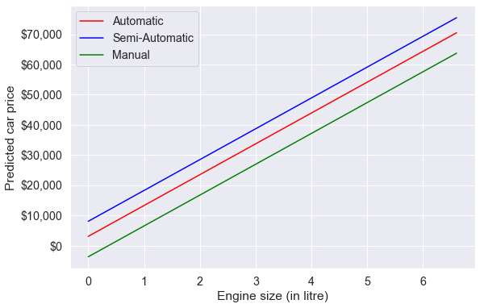
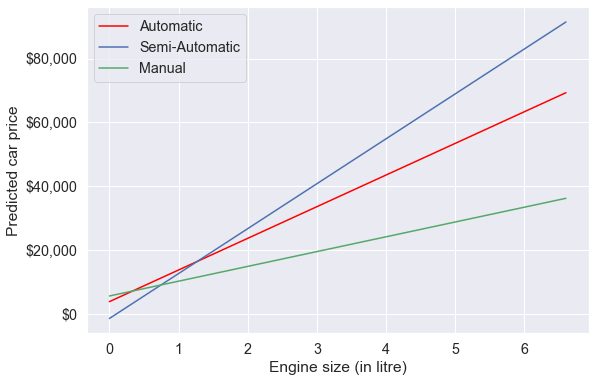
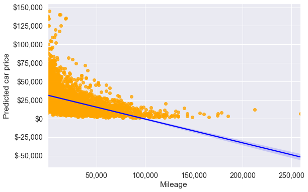
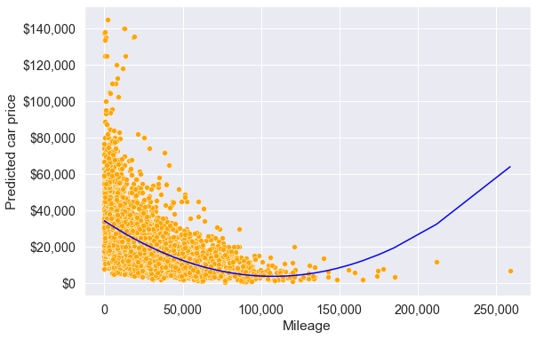
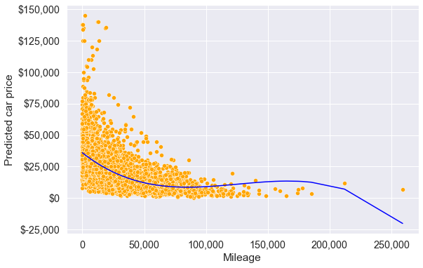

import pandas as pd
import numpy as np
import statsmodels.formula.api as smf
import seaborn as sns
import matplotlib.pyplot as plt
from sklearn.preprocessing import PolynomialFeatures
from sklearn.linear_model import LinearRegression
from sklearn.metrics import mean_squared_error3 Extending Linear Regression (statsmodels)
Read sections 3.3.1 and 3.3.2 of the book before using these notes.
Note that in this course, lecture notes are not sufficient, you must read the book for better understanding. Lecture notes are just implementing the concepts of the book on a dataset, but not explaining the concepts elaborately.
3.1 Variable interactions
trainf = pd.read_csv('./Datasets/Car_features_train.csv')
trainp = pd.read_csv('./Datasets/Car_prices_train.csv')
testf = pd.read_csv('./Datasets/Car_features_test.csv')
testp = pd.read_csv('./Datasets/Car_prices_test.csv')
train = pd.merge(trainf,trainp)
test = pd.merge(testf,testp)
train.head()| carID | brand | model | year | transmission | mileage | fuelType | tax | mpg | engineSize | price | |
|---|---|---|---|---|---|---|---|---|---|---|---|
| 0 | 18473 | bmw | 6 Series | 2020 | Semi-Auto | 11 | Diesel | 145 | 53.3282 | 3.0 | 37980 |
| 1 | 15064 | bmw | 6 Series | 2019 | Semi-Auto | 10813 | Diesel | 145 | 53.0430 | 3.0 | 33980 |
| 2 | 18268 | bmw | 6 Series | 2020 | Semi-Auto | 6 | Diesel | 145 | 53.4379 | 3.0 | 36850 |
| 3 | 18480 | bmw | 6 Series | 2017 | Semi-Auto | 18895 | Diesel | 145 | 51.5140 | 3.0 | 25998 |
| 4 | 18492 | bmw | 6 Series | 2015 | Automatic | 62953 | Diesel | 160 | 51.4903 | 3.0 | 18990 |
Until now, we have assumed that the association between a predictor \(X_j\) and response \(Y\) does not depend on the value of other predictors. For example, the multiple linear regression model that we developed in Chapter 2 assumes that the average increase in price associated with a unit increase in engineSize is always $12,180, regardless of the value of other predictors. However, this assumption may be incorrect.
3.1.1 Variable interaction between continuous predictors
We can relax this assumption by considering another predictor, called an interaction term. Let us assume that the average increase in price associated with a one-unit increase in engineSize depends on the model year of the car. In other words, there is an interaction between engineSize and year. This interaction can be included as a predictor, which is the product of engineSize and year. Note that there are several possible interactions that we can consider. Here the interaction between engineSize and year is just an example.
#Considering interaction between engineSize and year
ols_object = smf.ols(formula = 'price~year*engineSize+mileage+mpg', data = train)
model = ols_object.fit()
model.summary()| Dep. Variable: | price | R-squared: | 0.682 |
| Model: | OLS | Adj. R-squared: | 0.681 |
| Method: | Least Squares | F-statistic: | 2121. |
| Date: | Tue, 24 Jan 2023 | Prob (F-statistic): | 0.00 |
| Time: | 15:28:11 | Log-Likelihood: | -52338. |
| No. Observations: | 4960 | AIC: | 1.047e+05 |
| Df Residuals: | 4954 | BIC: | 1.047e+05 |
| Df Model: | 5 | ||
| Covariance Type: | nonrobust |
| coef | std err | t | P>|t| | [0.025 | 0.975] | |
| Intercept | 5.606e+05 | 2.74e+05 | 2.048 | 0.041 | 2.4e+04 | 1.1e+06 |
| year | -275.3833 | 135.695 | -2.029 | 0.042 | -541.405 | -9.361 |
| engineSize | -1.796e+06 | 9.97e+04 | -18.019 | 0.000 | -1.99e+06 | -1.6e+06 |
| year:engineSize | 896.7687 | 49.431 | 18.142 | 0.000 | 799.861 | 993.676 |
| mileage | -0.1525 | 0.008 | -17.954 | 0.000 | -0.169 | -0.136 |
| mpg | -84.3417 | 9.048 | -9.322 | 0.000 | -102.079 | -66.604 |
| Omnibus: | 2330.413 | Durbin-Watson: | 0.524 |
| Prob(Omnibus): | 0.000 | Jarque-Bera (JB): | 29977.437 |
| Skew: | 1.908 | Prob(JB): | 0.00 |
| Kurtosis: | 14.423 | Cond. No. | 7.66e+07 |
Notes:
[1] Standard Errors assume that the covariance matrix of the errors is correctly specified.
[2] The condition number is large, 7.66e+07. This might indicate that there are
strong multicollinearity or other numerical problems.
Note that the R-squared has increased as compared to the model in Chapter 2 since we added a predictor.
The model equation is:
\[\begin{equation} price = \beta_0 + \beta_1*year + \beta_2*engineSize + \beta_3*(year * engineSize) + \beta4*mileage + \beta_5*mpg, \end{equation}\]or
\[\begin{equation} price = \beta_0 + \beta_1*year + (\beta_2+\beta_3*year)*engineSize + \beta4*mileage + \beta_5*mpg, \end{equation}\]or
\[\begin{equation} price = \beta_0 + \beta_1*year + \tilde \beta*engineSize + \beta4*mileage + \beta_5*mpg, \end{equation}\]
Since \(\tilde \beta\) is a function of year, the association between engineSize and price is no longer a constant. A change in the value of year will change the association between price and engineSize.
Substituting the values of the coefficients:
price = 5.606e5 - 275.3833year + (-1.796e6+896.7687year)engineSize -0.1525mileage -84.3417mpg
Thus, for cars launched in the year 2010, the average increase in price for one liter increase in engine size is -1.796e6 + 896.7687 * 2010 \(\approx\) \$6,500, assuming all the other predictors are constant. However, for cars launched in the year 2020, the average increase in price for one liter increase in engine size is -1.796e6 + 896.7687*2020 \(\approx\) \$15,500 , assuming all the other predictors are constant.
Similarly, the equation can be re-arranged as:
price = 5.606e5 +(-275.3833+896.7687engineSize)year -1.796e6engineSize -0.1525mileage -84.3417*mpg
Thus, for cars with an engine size of 2 litres, the average increase in price for a one year newer model is -275.3833+896.7687 * 2 \(\approx\) \$1500, assuming all the other predictors are constant. However, for cars with an engine size of 3 litres, the average increase in price for a one year newer model is -275.3833+896.7687 * 3 \(\approx\) \$2400, assuming all the other predictors are constant.
#Computing the RMSE of the model with the interaction term
pred_price = model.predict(testf)
np.sqrt(((testp.price - pred_price)**2).mean())9423.598872501092Note that the RMSE is lower than that of the model in Chapter 2. This is because the interaction term between engineSize and year is significant and relaxes the assumption of constant association between price and engine size, and between price and year. This added flexibility makes the model better fit the data. Caution: Too much flexibility may lead to overfitting!
Note that interaction terms corresponding to other variable pairs, and higher order interaction terms (such as those containing 3 or 4 variables) may also be significant and improve the model fit & thereby the prediction accuracy of the model.
3.1.2 Including qualitative predictors in the model
Let us develop a model for predicting price based on engineSize and the qualitative predictor transmission.
#checking the distribution of values of transmission
train.transmission.value_counts()Manual 1948
Automatic 1660
Semi-Auto 1351
Other 1
Name: transmission, dtype: int64Note that the Other category of the variable transmission contains only a single observation, which is likely to be insufficient to train the model. We’ll remove that observation from the training data. Another option may be to combine the observation in the Other category with the nearest category, and keep it in the data.
train_updated = train[train.transmission!='Other']ols_object = smf.ols(formula = 'price ~ engineSize + transmission', data = train_updated)
model = ols_object.fit()
model.summary()| Dep. Variable: | price | R-squared: | 0.459 |
| Model: | OLS | Adj. R-squared: | 0.458 |
| Method: | Least Squares | F-statistic: | 1400. |
| Date: | Tue, 24 Jan 2023 | Prob (F-statistic): | 0.00 |
| Time: | 15:28:21 | Log-Likelihood: | -53644. |
| No. Observations: | 4959 | AIC: | 1.073e+05 |
| Df Residuals: | 4955 | BIC: | 1.073e+05 |
| Df Model: | 3 | ||
| Covariance Type: | nonrobust |
| coef | std err | t | P>|t| | [0.025 | 0.975] | |
| Intercept | 3042.6765 | 661.190 | 4.602 | 0.000 | 1746.451 | 4338.902 |
| transmission[T.Manual] | -6770.6165 | 442.116 | -15.314 | 0.000 | -7637.360 | -5903.873 |
| transmission[T.Semi-Auto] | 4994.3112 | 442.989 | 11.274 | 0.000 | 4125.857 | 5862.765 |
| engineSize | 1.023e+04 | 247.485 | 41.323 | 0.000 | 9741.581 | 1.07e+04 |
| Omnibus: | 1575.518 | Durbin-Watson: | 0.579 |
| Prob(Omnibus): | 0.000 | Jarque-Bera (JB): | 11006.609 |
| Skew: | 1.334 | Prob(JB): | 0.00 |
| Kurtosis: | 9.793 | Cond. No. | 11.4 |
Notes:
[1] Standard Errors assume that the covariance matrix of the errors is correctly specified.
Note that there is no coefficient for the Automatic level of the variable Transmission. If a car doesn’t have Manual or Semi-Automatic transmission, then it has an Automatic transmission. Thus, the coefficient of Automatic will be redundant, and the dummy variable corresponding to Automatic transmission is dropped from the model.
The level of the categorical variable that is dropped from the model is called the baseline level. Here Automatic transmission is the baseline level. The coefficients of other levels of transmission should be interpreted with respect to the baseline level.
Q: Interpret the intercept term
Ans: For the hypothetical scenario of a car with zero engine size and Automatic transmission, the estimated mean car price is \(\approx\) \$3042.
Q: Interpret the coefficient of transmission[T.Manual]
Ans: The estimated mean price of a car with manual transmission is \(\approx\) \$6770 less than that of a car with Automatic transmission.
Let us visualize the developed model.
#Visualizing the developed model
plt.rcParams["figure.figsize"] = (9,6)
sns.set(font_scale = 1.3)
x = np.linspace(train_updated.engineSize.min(),train_updated.engineSize.max(),100)
ax = sns.lineplot(x = x, y = model.params['engineSize']*x+model.params['Intercept'], color = 'red')
sns.lineplot(x = x, y = model.params['engineSize']*x+model.params['Intercept']+model.params['transmission[T.Semi-Auto]'], color = 'blue')
sns.lineplot(x = x, y = model.params['engineSize']*x+model.params['Intercept']+model.params['transmission[T.Manual]'], color = 'green')
plt.legend(labels=["Automatic","Semi-Automatic", "Manual"])
plt.xlabel('Engine size (in litre)')
plt.ylabel('Predicted car price')
ax.yaxis.set_major_formatter('${x:,.0f}')
Based on the developed model, for a given engine size, the car with a semi-automatic transmission is estimated to be the most expensive on average, while the car with a manual transmission is estimated to be the least expensive on average.
Changing the baseline level: By default, the baseline level is chosen as the one that comes first if the levels are arranged in alphabetical order. However, you can change the baseline level by specifying one explicitly.
Internally, statsmodels uses the patsy package to convert formulas and data to the matrices that are used in model fitting. You may refer to this section in the patsy documentation to specify a particular level of the categorical variable as the baseline.
For example, suppose we wish to change the baseline level to Manual transmission. We can specify this in the formula as follows:
ols_object = smf.ols(formula = 'price~engineSize+C(transmission, Treatment("Manual"))', data = train_updated)
model = ols_object.fit()
model.summary()| Dep. Variable: | price | R-squared: | 0.459 |
| Model: | OLS | Adj. R-squared: | 0.458 |
| Method: | Least Squares | F-statistic: | 1400. |
| Date: | Tue, 24 Jan 2023 | Prob (F-statistic): | 0.00 |
| Time: | 15:28:39 | Log-Likelihood: | -53644. |
| No. Observations: | 4959 | AIC: | 1.073e+05 |
| Df Residuals: | 4955 | BIC: | 1.073e+05 |
| Df Model: | 3 | ||
| Covariance Type: | nonrobust |
| coef | std err | t | P>|t| | [0.025 | 0.975] | |
| Intercept | -3727.9400 | 492.917 | -7.563 | 0.000 | -4694.275 | -2761.605 |
| C(transmission, Treatment("Manual"))[T.Automatic] | 6770.6165 | 442.116 | 15.314 | 0.000 | 5903.873 | 7637.360 |
| C(transmission, Treatment("Manual"))[T.Semi-Auto] | 1.176e+04 | 473.110 | 24.867 | 0.000 | 1.08e+04 | 1.27e+04 |
| engineSize | 1.023e+04 | 247.485 | 41.323 | 0.000 | 9741.581 | 1.07e+04 |
| Omnibus: | 1575.518 | Durbin-Watson: | 0.579 |
| Prob(Omnibus): | 0.000 | Jarque-Bera (JB): | 11006.609 |
| Skew: | 1.334 | Prob(JB): | 0.00 |
| Kurtosis: | 9.793 | Cond. No. | 8.62 |
Notes:
[1] Standard Errors assume that the covariance matrix of the errors is correctly specified.
3.1.3 Including qualitative predictors and their interaction with continuous predictors in the model
Note that the qualitative predictor leads to fitting 3 parallel lines to the data, as there are 3 categories.
However, note that we have made the constant association assumption. The fact that the lines are parallel means that the average increase in car price for one litre increase in engine size does not depend on the type of transmission. This represents a potentially serious limitation of the model, since in fact a change in engine size may have a very different association on the price of an automatic car versus a semi-automatic or manual car.
This limitation can be addressed by adding an interaction variable, which is the product of engineSize and the dummy variables for semi-automatic and manual transmissions.
#Using the ols function to create an ols object. 'ols' stands for 'Ordinary least squares'
ols_object = smf.ols(formula = 'price~engineSize*transmission', data = train_updated)
model = ols_object.fit()
model.summary()| Dep. Variable: | price | R-squared: | 0.479 |
| Model: | OLS | Adj. R-squared: | 0.478 |
| Method: | Least Squares | F-statistic: | 909.9 |
| Date: | Sun, 22 Jan 2023 | Prob (F-statistic): | 0.00 |
| Time: | 22:55:55 | Log-Likelihood: | -53550. |
| No. Observations: | 4959 | AIC: | 1.071e+05 |
| Df Residuals: | 4953 | BIC: | 1.072e+05 |
| Df Model: | 5 | ||
| Covariance Type: | nonrobust |
| coef | std err | t | P>|t| | [0.025 | 0.975] | |
| Intercept | 3754.7238 | 895.221 | 4.194 | 0.000 | 1999.695 | 5509.753 |
| transmission[T.Manual] | 1768.5856 | 1294.071 | 1.367 | 0.172 | -768.366 | 4305.538 |
| transmission[T.Semi-Auto] | -5282.7164 | 1416.472 | -3.729 | 0.000 | -8059.628 | -2505.805 |
| engineSize | 9928.6082 | 354.511 | 28.006 | 0.000 | 9233.610 | 1.06e+04 |
| engineSize:transmission[T.Manual] | -5285.9059 | 646.175 | -8.180 | 0.000 | -6552.695 | -4019.117 |
| engineSize:transmission[T.Semi-Auto] | 4162.2428 | 552.597 | 7.532 | 0.000 | 3078.908 | 5245.578 |
| Omnibus: | 1379.846 | Durbin-Watson: | 0.622 |
| Prob(Omnibus): | 0.000 | Jarque-Bera (JB): | 9799.471 |
| Skew: | 1.139 | Prob(JB): | 0.00 |
| Kurtosis: | 9.499 | Cond. No. | 30.8 |
Notes:
[1] Standard Errors assume that the covariance matrix of the errors is correctly specified.
The model equation for the model with interactions is:
Automatic transmission: price = 3754.7238 + 9928.6082 * engineSize,
Semi-Automatic transmission: price = 3754.7238 + 9928.6082 * engineSize + (-5282.7164+4162.2428*engineSize),
Manual transmission: price = 3754.7238 + 9928.6082 * engineSize +(1768.5856-5285.9059 * engineSize),
or
Automatic transmission: price = 3754.7238 + 9928.6082 * engineSize,
Semi-Automatic transmission: price = -1527 + 7046 * engineSize,
Manual transmission: price = 5523 + 4642 * engineSize
Q: Interpret the coefficient of manual tranmission, i.e., the coefficient of transmission[T.Manual].
A: For a hypothetical scenario of zero engine size, the estimated mean price of a car with Manual transmission is \(\approx\) \$1768 more than the estimated mean price of a car with Automatic transmission.
Q: Interpret the coefficient of the interaction between engine size and manual transmission, i.e., the coefficient of engineSize:transmission[T.Manual].
A: For a unit (or a litre) increase in engineSize , the increase in estimated mean price of a car with Manual transmission is \(\approx\) \$5285 less than the increase in estimated mean price of a car with Automatic transmission.
#Visualizing the developed model with interaction terms
plt.rcParams["figure.figsize"] = (9,6)
sns.set(font_scale = 1.3)
x = np.linspace(train_updated.engineSize.min(),train_updated.engineSize.max(),100)
ax = sns.lineplot(x = x, y = model.params['engineSize']*x+model.params['Intercept'], label='Automatic', color = 'red')
plt.plot(x, (model.params['engineSize']+model.params['engineSize:transmission[T.Semi-Auto]'])*x+model.params['Intercept']+model.params['transmission[T.Semi-Auto]'], '-b', label='Semi-Automatic')
plt.plot(x, (model.params['engineSize']+model.params['engineSize:transmission[T.Manual]'])*x+model.params['Intercept']+model.params['transmission[T.Manual]'], '-g', label='Manual')
plt.legend(loc='upper left')
plt.xlabel('Engine size (in litre)')
plt.ylabel('Predicted car price')
ax.yaxis.set_major_formatter('${x:,.0f}')
Note the interaction term adds flexibility to the model.
The slope of the regression line for semi-automatic cars is the largest. This suggests that increase in engine size is associated with a higher increase in car price for semi-automatic cars, as compared to other cars.
3.2 Variable transformations
So far we have considered only a linear relationship between the predictors and the response. However, the relationship may be non-linear.
Consider the regression plot of price on mileage.
ax = sns.regplot(x = train_updated.mileage, y =train_updated.price,color = 'orange', line_kws = {'color':'blue'})
plt.xlabel('Mileage')
plt.ylabel('Predicted car price')
ax.yaxis.set_major_formatter('${x:,.0f}')
ax.xaxis.set_major_formatter('{x:,.0f}')
#R-squared of the model with just mileage
model = smf.ols('price~mileage', data = train_updated).fit()
model.rsquared0.22928048993376182From the first scatterplot, we see that the relationship between price and mileage doesn’t seem to be linear, as the points do not lie on a straight line. Also, we see the regression line (or the curve), which is the best fit line doesn’t seem to fit the points well. However, price on average seems to decrease with mileage, albeit in a non-linear manner.
3.2.1 Quadratic transformation
So, we guess that if we model price as a quadratic function of mileage, the model may better fit the points (or the curve may better fit the points). Let us transform the predictor mileage to include \(mileage^2\) (i.e., perform a quadratic transformation on the predictor).
#Including mileage squared as a predictor and developing the model
ols_object = smf.ols(formula = 'price~mileage+I(mileage**2)', data = train_updated)
model = ols_object.fit()
model.summary()| Dep. Variable: | price | R-squared: | 0.271 |
| Model: | OLS | Adj. R-squared: | 0.271 |
| Method: | Least Squares | F-statistic: | 920.6 |
| Date: | Sun, 22 Jan 2023 | Prob (F-statistic): | 0.00 |
| Time: | 23:26:05 | Log-Likelihood: | -54382. |
| No. Observations: | 4959 | AIC: | 1.088e+05 |
| Df Residuals: | 4956 | BIC: | 1.088e+05 |
| Df Model: | 2 | ||
| Covariance Type: | nonrobust |
| coef | std err | t | P>|t| | [0.025 | 0.975] | |
| Intercept | 3.44e+04 | 332.710 | 103.382 | 0.000 | 3.37e+04 | 3.5e+04 |
| mileage | -0.5662 | 0.017 | -33.940 | 0.000 | -0.599 | -0.534 |
| I(mileage ** 2) | 2.629e-06 | 1.56e-07 | 16.813 | 0.000 | 2.32e-06 | 2.94e-06 |
| Omnibus: | 2362.973 | Durbin-Watson: | 0.325 |
| Prob(Omnibus): | 0.000 | Jarque-Bera (JB): | 22427.952 |
| Skew: | 2.052 | Prob(JB): | 0.00 |
| Kurtosis: | 12.576 | Cond. No. | 4.81e+09 |
Notes:
[1] Standard Errors assume that the covariance matrix of the errors is correctly specified.
[2] The condition number is large, 4.81e+09. This might indicate that there are
strong multicollinearity or other numerical problems.
Note that in the formula specified within the ols() function, the I() operator isolates or insulates the contents within I(…) from the regular formula operators. Without the I() operator, mileage**2 will be treated as the interaction of mileage with itself, which is mileage. Thus, to add the square of mileage as a separate predictor, we need to use the I() operator.
Let us visualize the model fit with the quadratic transformation of the predictor - mileage.
#Visualizing the regression line with the model consisting of the quadratic transformation of the predictor - mileage
pred_price = model.predict(train_updated)
ax = sns.scatterplot(x = 'mileage', y = 'price', data = train_updated, color = 'orange')
sns.lineplot(x = train_updated.mileage, y = pred_price, color = 'blue')
plt.xlabel('Mileage')
plt.ylabel('Predicted car price')
ax.yaxis.set_major_formatter('${x:,.0f}')
ax.xaxis.set_major_formatter('{x:,.0f}')
The above model seems to better fit the data (as compared to the model without transformation) at least upto mileage around 125,000. The \(R^2\) of the model with the quadratic transformation of mileage is also higher than that of the model without transformation indicating a better fit.
3.2.2 Cubic transformation
Let us see if a cubic transformation of mileage can further improve the model fit.
#Including mileage squared and mileage cube as predictors and developing the model
ols_object = smf.ols(formula = 'price~mileage+I(mileage**2)+I(mileage**3)', data = train_updated)
model = ols_object.fit()
model.summary()| Dep. Variable: | price | R-squared: | 0.283 |
| Model: | OLS | Adj. R-squared: | 0.283 |
| Method: | Least Squares | F-statistic: | 652.3 |
| Date: | Sun, 22 Jan 2023 | Prob (F-statistic): | 0.00 |
| Time: | 23:33:27 | Log-Likelihood: | -54340. |
| No. Observations: | 4959 | AIC: | 1.087e+05 |
| Df Residuals: | 4955 | BIC: | 1.087e+05 |
| Df Model: | 3 | ||
| Covariance Type: | nonrobust |
| coef | std err | t | P>|t| | [0.025 | 0.975] | |
| Intercept | 3.598e+04 | 371.926 | 96.727 | 0.000 | 3.52e+04 | 3.67e+04 |
| mileage | -0.7742 | 0.028 | -27.634 | 0.000 | -0.829 | -0.719 |
| I(mileage ** 2) | 6.875e-06 | 4.87e-07 | 14.119 | 0.000 | 5.92e-06 | 7.83e-06 |
| I(mileage ** 3) | -1.823e-11 | 1.98e-12 | -9.199 | 0.000 | -2.21e-11 | -1.43e-11 |
| Omnibus: | 2380.788 | Durbin-Watson: | 0.321 |
| Prob(Omnibus): | 0.000 | Jarque-Bera (JB): | 23039.307 |
| Skew: | 2.065 | Prob(JB): | 0.00 |
| Kurtosis: | 12.719 | Cond. No. | 7.73e+14 |
Notes:
[1] Standard Errors assume that the covariance matrix of the errors is correctly specified.
[2] The condition number is large, 7.73e+14. This might indicate that there are
strong multicollinearity or other numerical problems.
#Visualizing the model with the cubic transformation of mileage
pred_price = model.predict(train_updated)
ax = sns.scatterplot(x = 'mileage', y = 'price', data = train_updated, color = 'orange')
sns.lineplot(x = train_updated.mileage, y = pred_price, color = 'blue')
plt.xlabel('Mileage')
plt.ylabel('Predicted car price')
ax.yaxis.set_major_formatter('${x:,.0f}')
ax.xaxis.set_major_formatter('{x:,.0f}')
Note that the model fit with the cubic transformation of mileage seems slightly better as compared to the models with the quadratic transformation, and no transformation of mileage, for mileage up to 180k. However, the model should not be used to predict car prices of cars with a mileage higher than 180k.
Let’s update the model created earlier (in the beginning of this chapter) to include the transformed predictor.
#Model with an interaction term and a variable transformation term
ols_object = smf.ols(formula = 'price~year*engineSize+mileage+mpg+I(mileage**2)', data = train_updated)
model = ols_object.fit()
model.summary()| Dep. Variable: | price | R-squared: | 0.702 |
| Model: | OLS | Adj. R-squared: | 0.702 |
| Method: | Least Squares | F-statistic: | 1947. |
| Date: | Sun, 22 Jan 2023 | Prob (F-statistic): | 0.00 |
| Time: | 23:42:13 | Log-Likelihood: | -52162. |
| No. Observations: | 4959 | AIC: | 1.043e+05 |
| Df Residuals: | 4952 | BIC: | 1.044e+05 |
| Df Model: | 6 | ||
| Covariance Type: | nonrobust |
| coef | std err | t | P>|t| | [0.025 | 0.975] | |
| Intercept | 1.53e+06 | 2.7e+05 | 5.671 | 0.000 | 1e+06 | 2.06e+06 |
| year | -755.7419 | 133.791 | -5.649 | 0.000 | -1018.031 | -493.453 |
| engineSize | -2.022e+06 | 9.72e+04 | -20.803 | 0.000 | -2.21e+06 | -1.83e+06 |
| year:engineSize | 1008.6993 | 48.196 | 20.929 | 0.000 | 914.215 | 1103.184 |
| mileage | -0.3548 | 0.014 | -25.973 | 0.000 | -0.382 | -0.328 |
| mpg | -54.7450 | 8.896 | -6.154 | 0.000 | -72.185 | -37.305 |
| I(mileage ** 2) | 1.926e-06 | 1.04e-07 | 18.536 | 0.000 | 1.72e-06 | 2.13e-06 |
| Omnibus: | 2355.448 | Durbin-Watson: | 0.562 |
| Prob(Omnibus): | 0.000 | Jarque-Bera (JB): | 38317.404 |
| Skew: | 1.857 | Prob(JB): | 0.00 |
| Kurtosis: | 16.101 | Cond. No. | 6.40e+12 |
Notes:
[1] Standard Errors assume that the covariance matrix of the errors is correctly specified.
[2] The condition number is large, 6.4e+12. This might indicate that there are
strong multicollinearity or other numerical problems.
Note that the R-squared has increased as compared to the model with just the interaction term.
#Computing RMSE on test data
pred_price = model.predict(testf)
np.sqrt(((testp.price - pred_price)**2).mean())9074.494088619422Note that the prediction accuracy of the model has further increased, as the RMSE has reduced. The transformed predictor is statistically significant and provides additional flexibility to better capture the trend in the data, leading to an increase in prediction accuracy.
3.3 PolynomialFeatures()
The function PolynomialFeatures() from the sklearn library can be used to generate a predictor matrix that includes all interactions and transformations upto a degree d.
X_train = train[['mileage', 'engineSize', 'year', 'mpg']]
y_train = train[['price']]
X_test = test[['mileage', 'engineSize', 'year', 'mpg']]
y_test = test[['price']]3.3.1 Generating polynomial features
Let us generate polynomial features upto degree 2. This will include all the two-factor interactions, and all squared terms of degree 2.
poly = PolynomialFeatures(2, include_bias = False) # Create the object - degree is 2
# Generate the polynomial features
X_train_poly = poly.fit_transform(X_train) Note that the LinearRegression() function adds the intercept by default (check the fit_intercept argument). Thus, we have put include_bias = False while generating the polynomial features, as we don’t need the intercept. The term bias here refers to the intercept (you will learn about bias in detail in STAT303-3). Another option is to include the intercept while generating the polynomial features, and put fit_intercept = False in the LinearRegression() function.
Below are the polynomial features generated by the PolynomialFeatures() functions.
poly.get_feature_names_out()array(['mileage', 'engineSize', 'year', 'mpg', 'mileage^2',
'mileage engineSize', 'mileage year', 'mileage mpg',
'engineSize^2', 'engineSize year', 'engineSize mpg', 'year^2',
'year mpg', 'mpg^2'], dtype=object)3.3.2 Fitting the model
model = LinearRegression()
model.fit(X_train_poly, y_train) LinearRegression()In a Jupyter environment, please rerun this cell to show the HTML representation or trust the notebook.
On GitHub, the HTML representation is unable to render, please try loading this page with nbviewer.org.
LinearRegression()
3.3.3 Testing the model
X_test_poly = poly.fit_transform(X_test)#RMSE
np.sqrt(mean_squared_error(y_test, model.predict(X_test_poly)))8896.175508213777Note that the polynomial features have helped reduced the RMSE further.